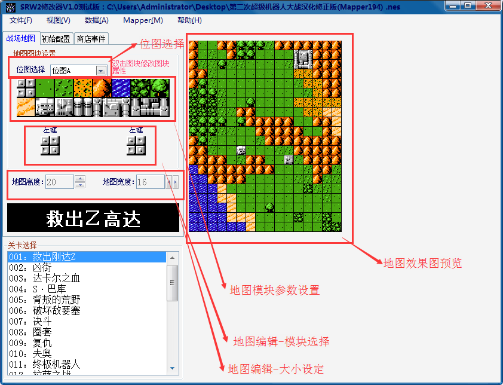
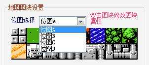
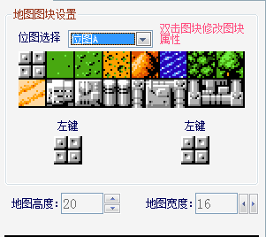
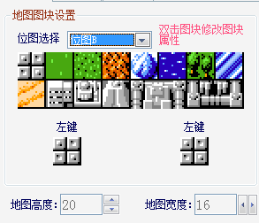
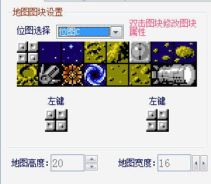
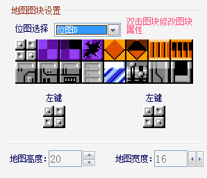
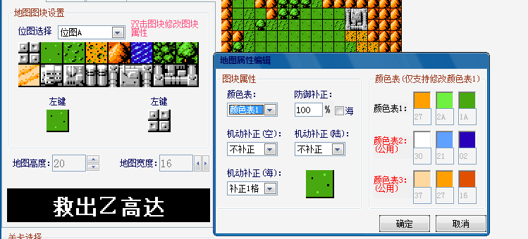

功能区域布局：

1.位图选择：位图即组成地图的地图模块的总和，一个位图总共有16个地图模块可供组成地图，原版共有4个位图可供选择。位图选择和位图形式如下图所示：

 
 
2.地图模块参数设置（一般不建议修改）：双击对应相应的地图模块即可对地图模块的参数进行编辑，以平地的地图模块参数设置为例，双击弹出编辑框。第一项为颜色表，一共有4组颜色可供选择。命中、防御补正（扩容版中存在）两者补正数值相同。海，该地图模块是否为海类型的逻辑，影响机体类型和武器的适应性，一般不更改。后面三项为空、陆、海三个机体类型相应的机动补正。颜色表1支持修改，此组颜色一共为三色，双击弹出调色板选择相应的颜色即可（注意多个地图模块使用同一组颜色，牵连性比较大，慎改）

3.地图编辑-模块选择：左键或者右键选择位图中的模块，在右侧的效果图上点击即可编辑地图。
4.地图编辑-大小设定：通过设定地图的高度和宽度设定地图的大小，地图的大小范围最大是32*32
5.地图效果预览：在此可通过鼠标左右键对地图进行编辑，并可即时预览当前关卡地图的全局效果图。